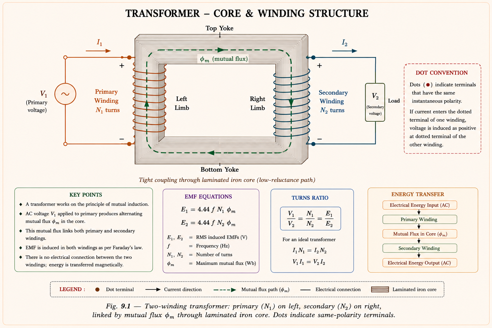
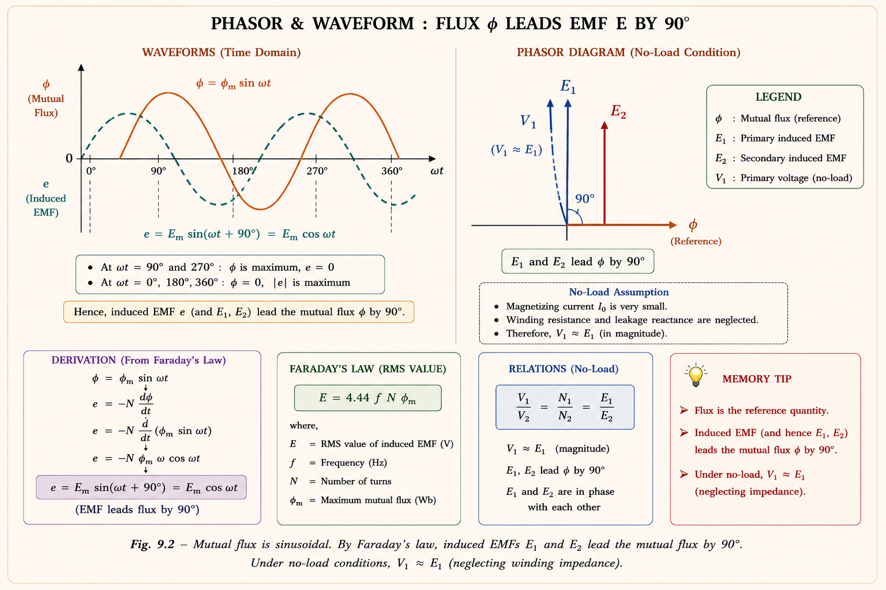
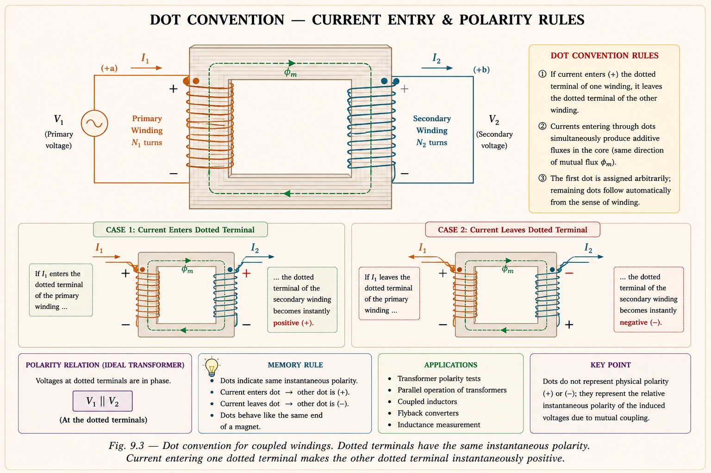
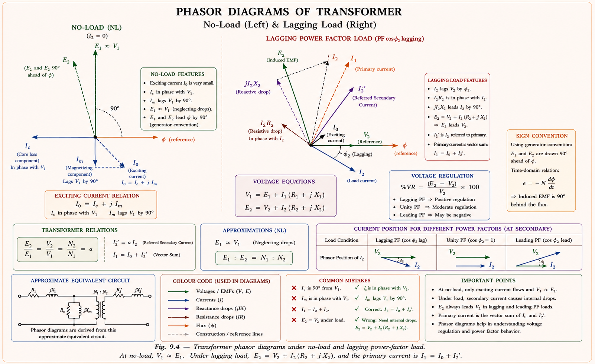
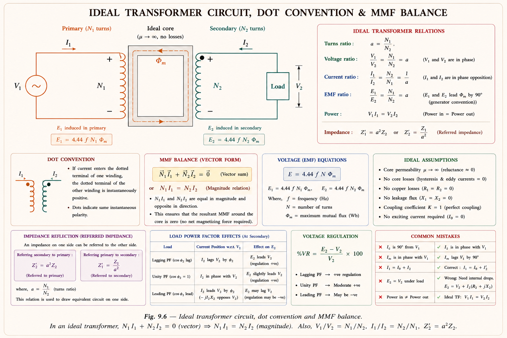
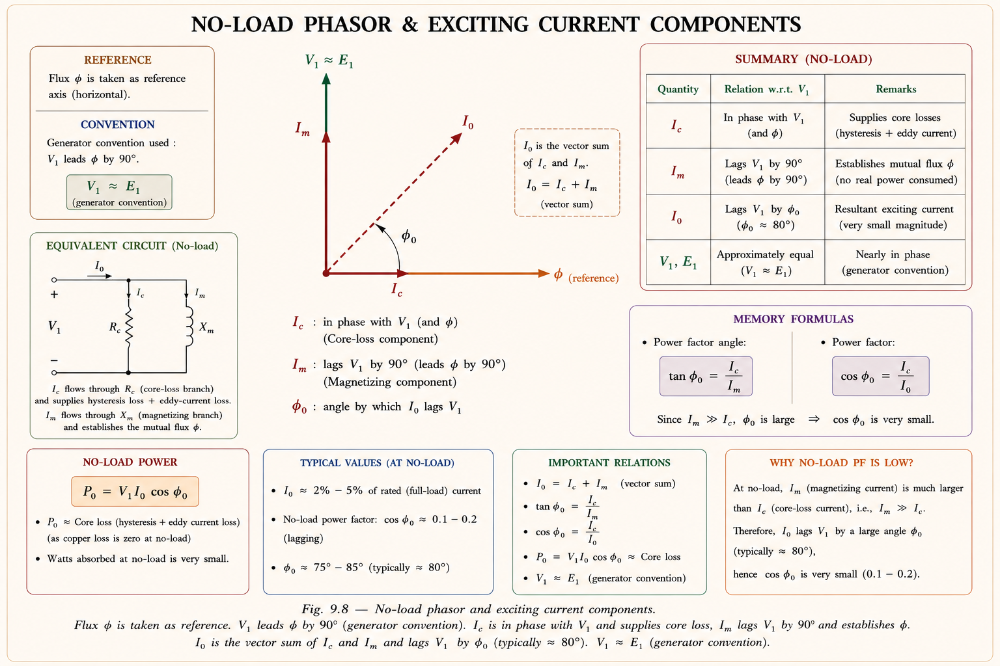
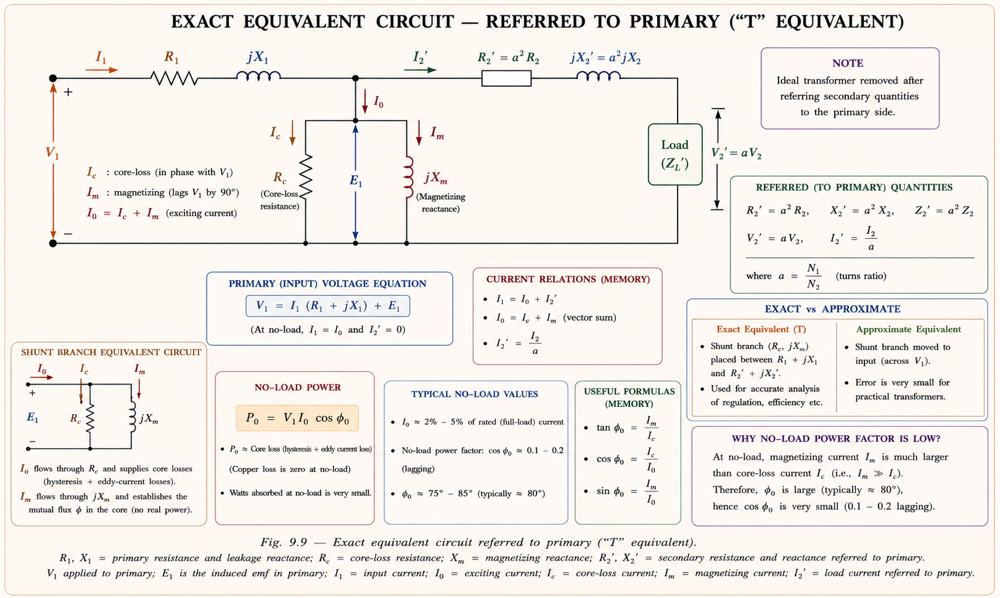
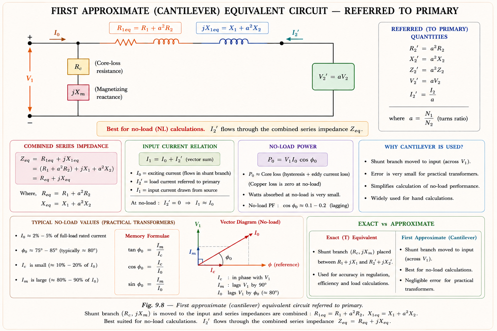
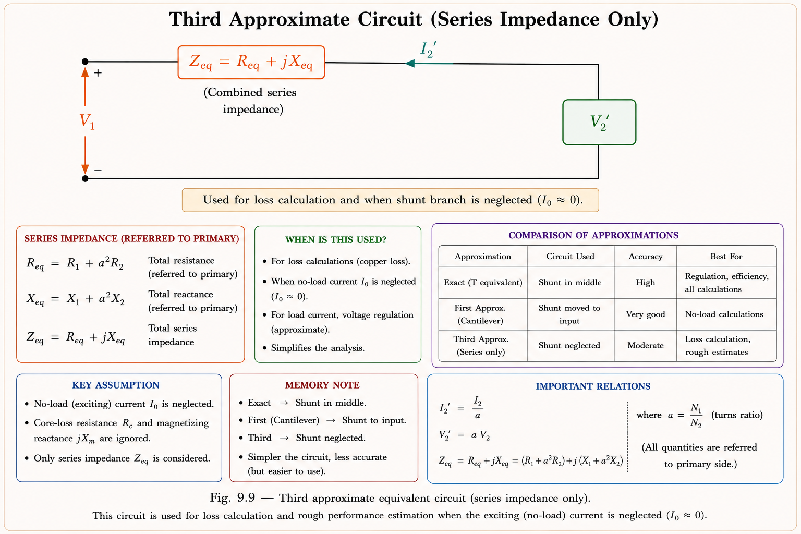

Basic principles, EMF equation, dot convention, ideal transformer, practical transformer model, equivalent circuits, phasor diagrams, exciting current components, leakage reactance, and solved numericals — complete with GATE & IES exam concepts.
A transformer is a static electromagnetic device that transfers electrical energy from one circuit to another through mutual induction, without any direct electrical connection and without change in frequency.[1]
The key distinction from rotating electrical machines is that a transformer has no moving parts — it is not an electromechanical energy converter. A transformer changes voltage and current levels while keeping power (and frequency) essentially constant. This is why it is sometimes said: "A transformer is not an electrical machine" — strictly speaking, it lacks mechanical output.
A transformer converts electrical energy to electrical energy (at different voltage/current levels). It has no mechanical port. In contrast, a DC motor or generator converts between electrical and mechanical energy. GATE/IES frequently test this distinction.
A transformer consists of two (or more) coils wound around a common ferromagnetic core. The primary winding (N₁ turns) is connected to the AC supply; the secondary winding (N₂ turns) delivers power to the load.[2]

The core is built of laminated silicon steel to reduce eddy current losses (thin laminations increase resistance to circulating currents) and hysteresis losses (low hysteresis coefficient of silicon steel). The core provides a low-reluctance path to concentrate flux and also gives mechanical support to the windings.
① Low reluctance path — concentrates mutual flux so nearly all flux links both windings (tight coupling). ② Mechanical support — the core structure physically holds the windings in place. Both roles are tested in IES objective questions.
When the primary is connected to a sinusoidal AC supply \(v_1 = V_m \sin\omega t\), it draws a magnetising current that establishes a sinusoidal flux in the core:[2]
By Faraday's law, the EMF induced in the primary winding (N₁ turns) is:
The peak value of EMF is \(E_{1m} = N_1 \phi_m \omega\). Converting to RMS:
The constant 4.44 = \(2\pi/\sqrt{2} = 4\sqrt{2} \approx 4.44\). It arises because the waveform is sinusoidal and we convert peak to RMS: \(E_{rms} = E_{peak}/\sqrt{2}\). The EMF leads the flux by 90°. Both E₁ and E₂ are in phase with each other (both 90° ahead of flux φ). This is a high-frequency GATE trap — EMF leads flux, not lags.

The induced EMF in any winding is governed by Lenz's Law: the direction of the induced EMF is such that, if a current were allowed to flow, it would oppose the change in flux causing it. Mathematically:[1]
The dot convention is a standardised method to determine the polarity of induced EMFs in transformer windings without drawing the complete winding geometry. A dot (•) is placed at one terminal of each winding.

In an ideal transformer with load: current enters the dotted terminal of the primary. By the dot convention, current leaves the dotted terminal of the secondary (into the load). The dots have the same instantaneous polarity. If both currents entered through dots simultaneously, they would satisfy Lenz's law by opposing each other's effect on the core flux — which is the defining condition.
The phasor diagram of a transformer must always accompany the circuit diagram for full understanding. Phasors represent sinusoidal quantities by their magnitude and phase angle.[2]

An ideal transformer is a hypothetical transformer with no losses and infinite permeability (\(\mu = \infty\)). Since \(\mu \rightarrow \infty\), the core reluctance is zero, and flux will be established without any exciting current (\(I_0 = 0\)). All flux links both windings perfectly (no leakage).[1]

A critical concept for GATE and IES: impedances can be referred from one winding to another using the turns ratio squared. This allows the entire transformer circuit to be reduced to a single-side equivalent.
In a practical transformer on no-load, the primary draws a small current called the exciting current (or no-load current) I₀. This current has two components:[2]

The hysteretic angle φ₀ is the angle between the sinusoidal flux and the sinusoidal exciting current. It exists because the B-H loop of the core is not linear — magnetising current is non-sinusoidal and slightly ahead of flux due to hysteresis. Typically φ₀ ≈ 80°, making the no-load power factor cos 80° ≈ 0.17 (very lagging).
A practical transformer differs from ideal by having: primary resistance R₁, primary leakage reactance jX₁, secondary resistance R₂, secondary leakage reactance jX₂, and a core (magnetising branch) represented by R_c (core loss) and jX_φ (magnetising reactance) in parallel.[2]

Not all flux produced by the primary links the secondary — a small fraction of flux completes its path through air (not the core). This is leakage flux. The leakage reactance models the effect of this flux that does not contribute to energy transfer but does cause voltage drop.
The exact equivalent circuit is complex to use in numerical problems. Two approximate equivalent circuits simplify analysis by moving the shunt (core) branch to either the input terminal or eliminating it altogether.[2]
Move the shunt branch (Rc ∥ jXφ) to the primary terminal (input). This eliminates the node between primary series impedance and shunt branch. Suitable for finding voltage regulation and efficiency calculations.

For voltage regulation and short-circuit test analysis, the core (shunt) branch can be neglected entirely since I₀ ≪ I₂. This gives the simplest equivalent with only the series impedance Z_eq.

| Circuit Type | Shunt Branch Position | When to Use | Accuracy |
|---|---|---|---|
| Exact "T" Equivalent | Between R₁jX₁ and R₂'jX₂' | Complete analysis, I₁ including I₀ | Highest |
| First Approximate (Cantilever) | Moved to primary input terminal | NL calculations, I₁ ≈ I₀ + I₂' | Good |
| Second & Final Approximate | Shunt branch omitted entirely | VR, SC test, η calculation | Acceptable for most |
Step 1: Establish turns ratio and rated quantities
Turns ratio: \(a = N_1/N_2 = 2400/240 = 10\)
Rated VA = 150,000 VA. On rated load, the transformer must deliver rated kVA at rated secondary voltage (2400 V referred to primary).
Taking \(V_2' = 2400\angle 0°\) V (reference phasor):
\[I_2' = \frac{150000}{2400}\angle{-\cos^{-1}(0.8)} = 62.5\angle{-36.87°} \text{ A}\]
Step 2: Refer secondary impedances to primary
\[Z_2' = a^2 Z_2 = 10^2 \times (2 + 4.5j) \times 10^{-3} = (0.2 + 0.45j)\ \Omega\]
Step 3: Find E₁ = E₂' (internal EMF)
\[E_1 = E_2' = V_2' + I_2' \cdot Z_2' = 2400\angle 0° + 62.5\angle{-36.87°} \times (0.2 + 0.45j)\]
Computing: \(I_2' \cdot Z_2' = 62.5\angle{-36.87°} \times 0.493\angle{66.04°} = 30.8\angle{29.17°}\)
\[E_1 = 2400 + 26.9 + j14.98 = \boxed{2426.92\angle 0.35°\ \text{V}}\]
Step 4: Find exciting current I₀
\[I_c = \frac{E_1}{R_c} = \frac{2426.92\angle 0.35°}{10000} = 0.2427\angle 0.35°\ \text{A}\]
\[I_\phi = \frac{E_1}{jX_\phi} = \frac{2426.92\angle 0.35°}{j1550} = 1.56\angle{-89.64°}\ \text{A}\]
\[I_0 = I_c + I_\phi = 0.2427\angle 0.35° + 1.56\angle{-89.64°} = \boxed{1.5845\angle{-80.84°}\ \text{A}}\]
Step 5: Find I₁
\[I_1 = I_2' + I_0 = 62.5\angle{-36.87°} + 1.5845\angle{-80.84°} = \boxed{63.65\angle{-37.86°}\ \text{A}}\]
Step 6: Find V₁
\[V_1 = E_1 + I_1(R_1 + jX_1) = 2426.92\angle 0.35° + 63.65\angle{-37.86°} \times (0.2 + 0.45j)\]
\[V_1 = \boxed{2454.68\angle 0.691°\ \text{V}}\]
Step 7: Input Power Factor
\[\text{I/P PF angle} = \angle V_1 - \angle I_1 = 0.691 - (-37.86°) = 38.55°\]
\[\text{PF} = \cos(38.55°) = \boxed{0.7821\ \text{lagging}}\]
The input PF (0.782 lag) is different from the load PF (0.8 lag) because I₀ adds a lagging reactive component. The no-load PF angle was 80.84° (nearly pure reactive), pulling the net input angle slightly beyond the load angle.
Since \(e = N \frac{d\phi}{dt} = N \phi_m \omega \cos(\omega t) = N \phi_m \omega \sin(\omega t + 90°)\), the EMF leads the flux by exactly 90°. This is derived from differentiation of a sine wave — derivative gives cosine, which is 90° ahead.
The exciting current I₀ is typically 2–10% of the full-load current in a well-designed power transformer. It is small because the core has high permeability, requiring little MMF (= N×I₀) to establish the required flux. The magnetising component Iφ dominates I₀ since no-load PF is very low (≈ 0.1–0.2).
The dot convention identifies relative polarity of induced EMFs without knowing winding geometry. Dotted terminals have the same instantaneous polarity. If current enters the dotted terminal of one winding, it leaves the dotted terminal of the other — both fluxes are then additive by Lenz's law.
| Parameter | Ideal Transformer | Practical Transformer |
|---|---|---|
| Core losses | Zero | Hysteresis + Eddy current |
| Copper losses | Zero | I²R in R₁ and R₂ |
| Permeability μ | ∞ (infinite) | Finite (silicon steel core) |
| Exciting current I₀ | Zero (I₀ = 0) | Small but non-zero (2–10% FL) |
| Leakage flux | Zero | Exists (X₁, X₂ non-zero) |
| Efficiency η | 100% | 95–99% (power transformers) |
| Coupling k | 1.0 (unity) | 0.95–0.99 (tight coupling) |
| V₁/V₂ relation | Exactly N₁/N₂ | Approx N₁/N₂ (drop in R₁X₁) |
Have a question on transformer equivalent circuits, EMF equations, dot convention, or solved numericals? Type below or pick a suggestion.
Static device, no moving parts. NOT an electrical machine. Transfers energy via mutual induction. Works on AC only. Frequency unchanged. Core: low-reluctance path + mechanical support.
\(E_1 = 4.44 f N_1 \phi_m\), \(E_2 = 4.44 f N_2 \phi_m\). EMF leads flux by 90°. Constant 4.44 = 2π/√2. Turns ratio a = N₁/N₂ = E₁/E₂.
Currents entering dotted terminals → additive fluxes. Same instantaneous polarity at dotted terminals. First dot assigned; rest follow from winding sense and Lenz's law.
μ=∞, no losses, I₀=0, k=1. V₁/V₂=N₁/N₂=a. N₁I₁=N₂I₂ (MMF balance). Z₂'=a²Z₂ (impedance referral). η=100%.
I₀ = √(Ic²+Iφ²). Ic in-phase with E₁ (core loss). Iφ lags E₁ by 90° (magnetising). Hysteretic angle φ₀ ≈ 80°. NL PF ≈ 0.1–0.2 lagging. I₀ ≈ 2–10% of FL current.
Exact "T": shunt branch between series elements. Cantilever: shunt at input — for NL. Final approx: no shunt — for VR, SC test. Req=R₁+a²R₂; Xeq=X₁+a²X₂.
Transformer Tests, Efficiency & Voltage Regulation — open circuit test, short circuit test, all-day efficiency, condition for maximum efficiency, and GATE/IES PYQs.
All technical content is derived from the following standard textbooks. No content is reproduced verbatim — all explanations, examples, numerical values, and diagrams are original to Aarova AI.